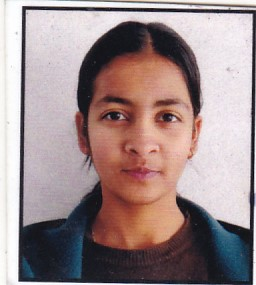

Barsha Gupta

Summary
I'm hardworking and passionate individual deeply interested in web development and cyber security field.
Education
- Undergraduation - B.Tech.(CSE), Annasaheb dange College of Engineering and technology, Ashta(2023-2027)
- HSC- SCTM Govt. Model Girls Higher Secondary School, Udhamppur, J&K
- SSC- Rising Pillars Public High School, Ramnagar,J&K
Work Experience
- 15 day Web Development Internship at OneStar Software Solutions, Sangli
Skills
- JAVA
- CPP
- C
- basics of database
- Communication
Achievements
- Foundation of Cybersecurity certificate from Coursera's Google professional certificate program
- Play It Safe certificate from Coursera's Google professional certificate program
- CodeWithoutBarriers Certificate from Microsoft Azure Program on AI
Other
Contact Me